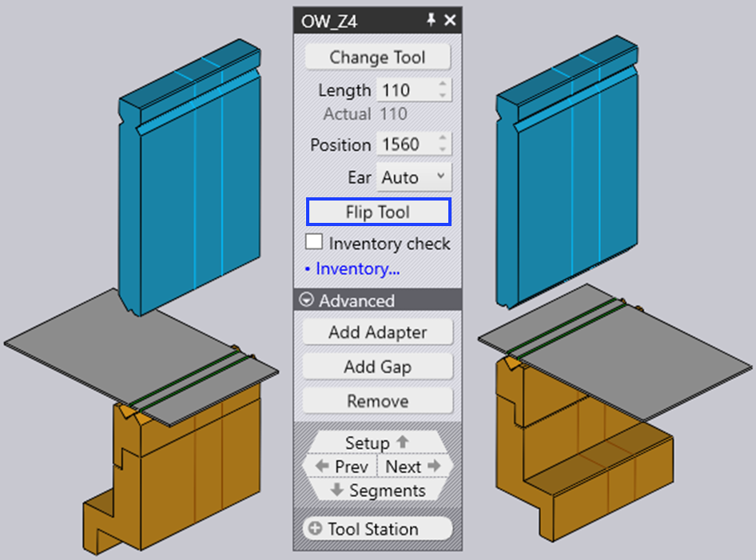
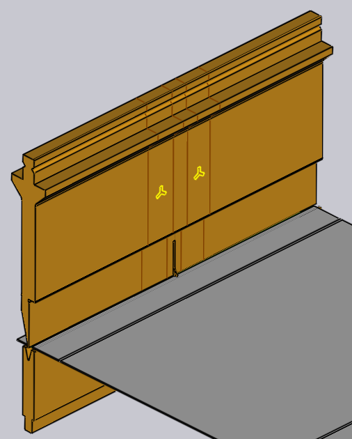
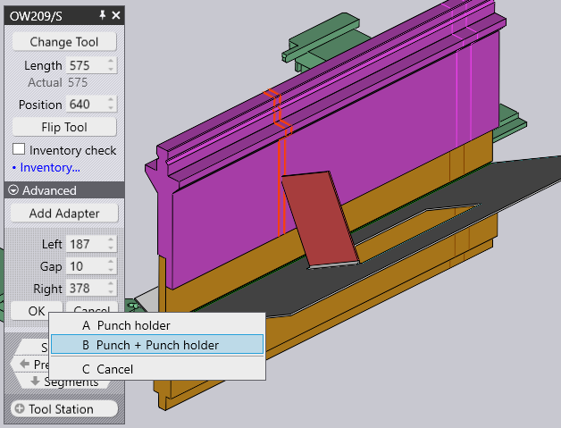

Redigera ett verktygsfäste
När du klickar på ett verktygsfäste visas panelen Bend Mount, där du kan redigera olika inställningar för bockningsfästet och utföra flera operationer.
Panelen Bend Mount

Panelen Bend Mount ser ut som på bilden bredvid. De exakta inställningarna och operationerna som är tillgängliga varierar beroende på om du klickar på ett stans-, dyn- eller adapterfäste. Dessutom kan vissa inställningar vara tillgängliga eller inte beroende på maskinens kapacitet.
-
Klicka på knappen Ändra verktygstyp för att ersätta verktyget som används för det valda fästet med ett annat verktyg. (Se avsnittet nedan för mer information om verktygsväljaren som används för att välja ett ersättningsverktyg.)
-
Inmatningen Längd används för att justera stationens längd. När du skriver in ett nytt värde här kommer TecZone Bend att komponera stationen igen med hjälp av en lämplig uppsättning segment för att försöka matcha den begärda längden så nära som möjligt. Du kan se vilka segment som används genom att titta på segmentgränserna som visas på bockningsfästet.
-
Inmatningen Läge används för att ställa in positionen för fästets vänstra kant längs maskinens bord eller balk. Positionen kan också justeras genom att dra fästet åt vänster eller höger. (Se avsnittet nedan om att dra fästet.)
-
Väljaren Horn (visas endast för stansfästen) kan användas för att tvinga TecZone Bend att använda vänster och/eller höger ear[1] flik i kompositionen.
-
Vrid verktyg används för att vända verktyget (från fram till bak). Det visas när du redigerar ett fäste som använder ett asymmetriskt verktyg (till exempel ett svanhalsverktyg). Vändningsfunktionen är tillräckligt intelligent för att avgöra om ytterligare hållare och verktyg behöver vändas för att upprätthålla konsistensen.I bilden nedan vänds till exempel stansen OW_Z4 (används för Z-bockning) och därmed vänds även dynan, hållaren och till och med delen för att upprätthålla processkonsistensen:
 -
Lägg till adapter används för att lägga till en förlängare för att öka höjden på stansen eller dynan. När du lägger till en adapter markeras adaptern och panelen för adaptern visas (detta gör att du kan ändra den adapter som används eller ta bort den).

-
Lägg till kolumn används för att lägga till ett mellanrum i verktygsfästet så att en fläns kan passera utan kollisioner (se avsnittet nedan om att lägga till ett mellanrum för mer information om detta).
-
Största verktygshöjd används för att ersätta de valda verktygen med andra högre verktyg från samma familj.
-
Klicka på Tag bort för att ta bort verktygsfästet. Ett felmeddelande om saknad stans eller saknad dyna visas i Bend Navigator för bockningar som använder denna station. Detta kan åtgärdas genom att använda Lägg till i kommandoraden till vänster för att lägga till ett nytt fäste.
-
Väljaren Sensorverktyg används för att bläddra igenom de olika ACB-avkänningsskivparen som kan användas för denna del. Valet beror på plåtens tjocklek och vilken stans som används.
-
Om kryssrutan Antalskontroll är markerad kontrolleras de segment som används mot det tillgängliga lagret av delar (som kan redigeras genom att klicka på länken Verktygshantering…). Om segment som inte finns i lagret används ritas en speciell treklöversymbol på dem, som du kan se i bilden nedan för 40 mm- och 45 mm-delarna nära stansens centrum nedan:

När du redigerar ett verktygsfäste med någon av dessa inställningar och operationer validerar TecZone Bend omedelbart statusen för alla bockningsprocesser och utför olika kontroller som kollision, verktygets användbarhet osv. Statusen för Bend Navigator uppdateras omedelbart och i realtid, vilket gör det mycket enkelt att experimentera med olika inställningar med omedelbar och korrekt feedback.
Fönstret Ersätt verktyg
När du klickar på knappen Ändra verktygstyp visas fönstret Ersätt verktyg:

I detta fönster visas alla tänkbara ersättningsverktyg.
-
Använd hierarkin till vänster för att begränsa valen – du kan till exempel välja att endast visa svanhalsverktyg för att göra valet enklare.
-
Använd väljaren Sortera längst upp för att sortera verktygen efter namn, höjd, radie eller andra sorteringskriterier (de exakta sorteringskriterierna beror på om du byter ut en stans, dyna eller adapter).
-
Du kan skriva in ett verktygsnamn (eller kortnamn) i rutan Sök för att snabbt begränsa listan. Det går också bra att skriva in en del av verktygsnamnet – om du till exempel skriver OW200 matchas både verktygen OW200, OW200/S och OW200/K.
-
Använd skjutreglaget Skala för att justera storleken på verktygsbilderna. Det verktyg som för närvarande används har en blå fyllning och en tjock kontur. Den ljusblå sektionen indikerar andra verktyg som används i denna del.
-
Avmarkera kryssrutan Filter för att få en obegränsad vy av alla verktyg (oavsett om de är lämpliga eller inte). I denna vy är de verktyg som inte är lämpliga gråmarkerade, och om du för musen över ett av dessa verktyg visas varför det inte är tillgängligt för val:

När du för musen över verktygsbilderna beräknar TecZone Bend omedelbart om de valda verktygsfästena med det nyvalda verktyget, och du kan i realtid se om det verktyg du överväger kommer att orsaka några kollisionsproblem eller inte (motsvarande böjningar i Bend Navigator lyser omedelbart upp i rött om det finns en kollision). Denna förhandsgranskning i realtid gör det mycket enkelt för dig att experimentera med olika verktygsval tills du hittar ett som fungerar.Om du klickar på ett av verktygen görs valet och det nya verktyget tillämpas på delen. Om du istället trycker på Esc återställs de förhandsgranskningsval du gjort och det ursprungliga verktyget förblir oförändrat.
Navigering och val
Panelen för bockningsfästen visar olika knappar i underpanelerna Navigering och Val.
-
Använd navigeringsknappen Uppspänning för att gå upp till redigering av hela bockningsinställningen. Se sidan Inställningsredigerare för mer information om detta.
-
Använd knapparna Tillbaka och Fortsätt för att bläddra igenom redigering av de olika verktygsfästena i denna inställning.
-
Använd navigeringsknappen Segment för att gå ner en nivå och redigera de enskilda segment som utgör detta fäste. Avsnittet nedan om redigering av verktygsfästesegment ger mer information om detta.
-
Använd väljaren Verktygsstation för att välja alla verktygsfästen som ingår i denna station. Detta väljer alla stansar, dynor och hållare som är inriktade med det valda fästet, så att de alla kan redigeras eller flyttas tillsammans.
-
Använd väljaren Liknande verktyg för att välja andra verktygsfästen som använder samma verktyg. Detta är ofta användbart innan du använder ett verktygsbyte; genom att välja alla stationer som använder det angivna verktyget breddas det tillgängliga urvalet av ersättningsverktyg.[2]
Redigera flera fästen

Om du väljer flera fästen genom att använda Shift+klicka på alla kan de redigeras tillsammans. Endast inställningar och operationer som är gemensamma för alla fästen är tillgängliga för redigering.Fält som Längd eller Läge visas för redigering endast om de är desamma för alla fästen.Om du har flera stationer är det användbart att välja alla stansar eller alla dynor innan du utför ett verktygsbyte. I detta fall är valet av tillgängliga ersättningsverktyg mer omfattande (eftersom det inte finns någon risk för kollision mellan stansar och dynor med olika höjd).
Dra ett bockningsverktygsfäste

Inmatningsrutan Läge kan användas för att ställa in en exakt position för ett fäste.Ibland är det enklare att bara dra ett bockningsfäste till en ny position. Gör så här:
-
Klicka på bockningsfästet för att markera det (markera flera fästen med Shift+klicka).
-
Klicka och börja dra åt vänster/höger för att flytta det valda fästet.Som bilden ovan visar visas en pilspets när du flyttar musen över ett valt fäste, vilket indikerar att du kan dra det valda fästet. När du drar fästet kan du enkelt justera fästet i förhållande till andra befintliga fästen med hjälp av snäppindikatorer.Om du plockar upp ett fäste nära dess vänstra kant används alla fästens vänstra kanter för att snäppa. Om du plockar upp ett fäste nära dess vänstra kant används den vänstra linjen för att snäppa, och så vidare.
Avancerade operationer
Här följer några mer avancerade operationer med redigeringspanelen Bend Mount.
Redigera verktygsfästesegment
Om du klickar på navigeringsknappen Segments när ett bockningsverktygsfäste redigeras öppnas panelen Tool Segment, som ser ut som bilden bredvid.

-
Väljaren Verktyg används för att ersätta det valda verktygssegmentet med ett längre eller kortare stycke, eller en annan typ av stycke.
-
Knapparna < Flytta och Flytta > används för att flytta det valda segmentet åt vänster eller höger i kompositionen. Detta ändrar inte kompositionens totala längd, men är användbart för att flytta en mätsensor åt vänster eller höger för att undvika hål, till exempel.
-
Knapparna Lägg till och Tag bort används för att lägga till nya segment i kompositionen eller ta bort det valda segmentet.
-
Navigeringsknapparna Tillbaka och Fortsätt används för att bläddra igenom redigeringen av de olika segmenten i bockningsfästet. Som bilden ovan visar är det verktygssegment som redigeras markerat med blått.
-
Navigeringsknappen Rigga används för att gå upp en nivå och redigera hela bockningsfästet istället för enskilda segment.
Lägga till ett mellanrum i en fäste
Ibland kan det vara användbart att lägga till ett smalt mellanrum i ett verktygsfäste, vanligtvis för att en fläns ska kunna passera utan kollision. För att göra detta klickar du på
knappen Lägg till kolumn (som visas om verktygsfästet är tillräckligt långt). En liten sektion öppnas i panelen, med en uppsättning sammanlänkade inmatningar för att ställa in vänster marginal, höger marginal och faktiskt mellanrum. Eftersom summan av dessa tre värden måste motsvara verktygsfästets längd, kommer redigering av två av dessa att ställa in det tredje värdet automatiskt.Bilden nedan visar denna operation pågående. Vi har en fläns som kolliderar med stansen, och vi justerar vänster-/högermarginalerna tills det föreslagna mellanrummet är i linje med där flänsen skär stansen (du kan se det föreslagna mellanrummet visas som två orange linjer ritade på bockningsfästet).

När du klickar på knappen Ok i denna underpanel skapas mellanrummet och du kan se att kollisionsfelet nu är löst:

| När du redigerar en station som använder en stanshållare frågar TecZone Bend om mellanrummet ska införas endast för stansen eller både stansen och hållaren. |
Använda en dubbel-V-adapter
Det är möjligt att använda en dubbel-V-adapter för att montera två dynor bredvid varandra. För att göra detta manuellt använder du knappen Lägg till adapter för att lägga till en adapter till en dyna och sedan knappen Ändra verktygstyp för att ändra den adaptern till en dubbel-V-adapter. Nu är det möjligt att lägga till en andra dyna till det andra spåret på dubbel-V-adaptern med kommandot Lägg till från kommandoraden och välja ett dynfäste.När du har monterat en dyna i ena spåret på en dubbel-V-hållare kan du flytta den till det andra spåret genom att klicka på knappen Ändra I-axel som visas: